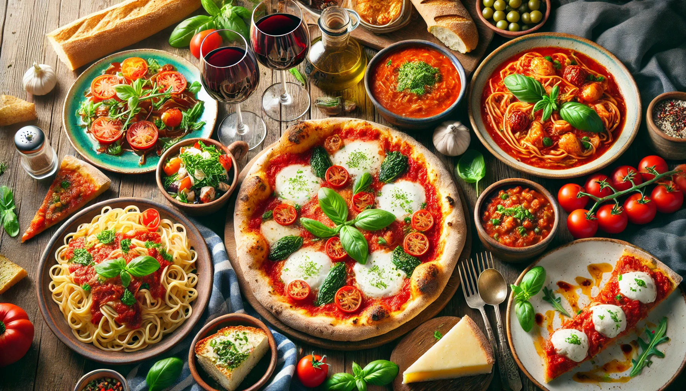

chicken briyani
Chicken Biryani is a flavorful rice dish made with basmati rice, chicken, onions, tomatoes, and aromatic spices. It is a perfect choice for a special lunch or dinner.
It is a long established fact that a reader will be distracted by the readable content of a page when looking at Book at Table

Welcome to our Recipes page! Here you can find simple, tasty, and easy-to-follow recipes that you can prepare at home. Whether you are looking for a quick breakfast, a delicious lunch, or a special dinner, there is something here for everyone.
Chicken Biryani is a flavorful rice dish made with basmati rice, chicken, onions, tomatoes, and aromatic spices. It is a perfect choice for a special lunch or dinner.
Masala Dosa is a popular South Indian breakfast made with crispy dosa and a tasty potato filling. It is usually served with sambar and coconut chutney.
Vegetable Pasta is a quick and easy dish prepared with pasta, fresh vegetables, herbs, and a flavorful sauce. It is a great option when you want something simple and filling.
Paneer Butter Masala is a creamy and delicious North Indian dish made with soft paneer cooked in a rich tomato and butter-based gravy. It goes well with naan, roti, or rice.
Welcome to our food blog! We created this space for people who love good food and enjoy trying new recipes. Here, we share simple, delicious, and easy-to-follow recipes that you can make at home. Our blog includes a variety of dishes, from traditional Indian food and quick breakfast ideas to snacks, desserts, and special dinner recipes. We also share food reviews and our experiences with different dishes and restaurants. We believe cooking does not have to be complicated. Our goal is to help you discover new flavors, enjoy cooking, and make every meal a little more special. Thank you for visiting our food blog. We hope you enjoy exploring our recipes as much as we enjoy sharing them with you.